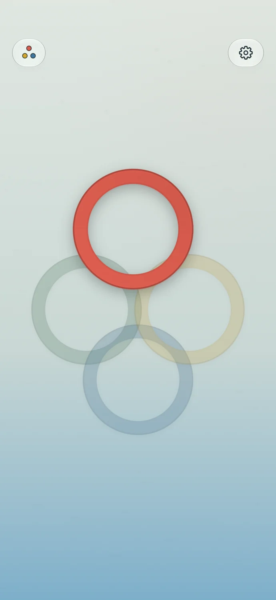
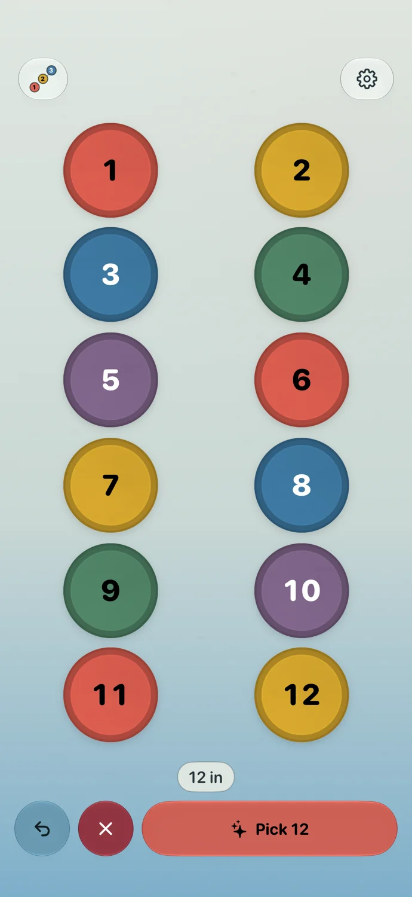
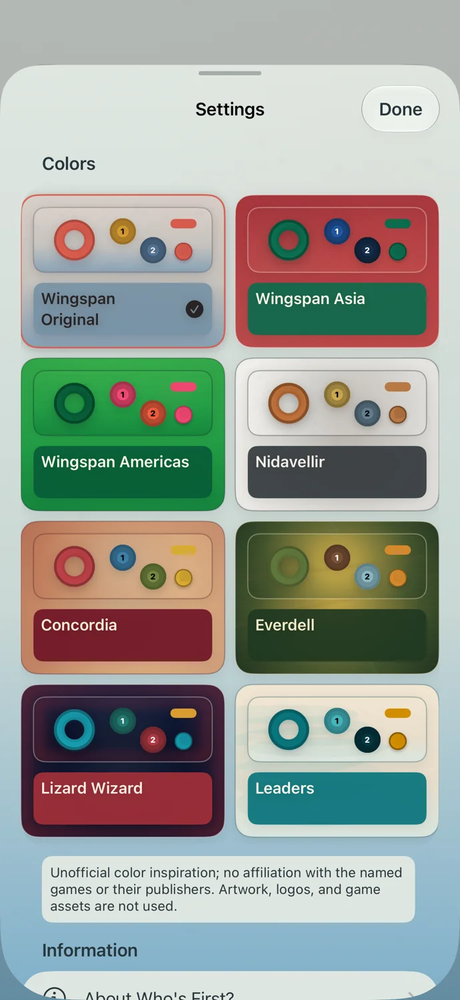

Fingers down. Decision made.
Everyone places a finger on the screen. One ring gets the moment.
Made for iPhone
Put your fingers down, tap your way in, or let a pinball decide. Who’s First? makes choosing someone part of the game.
No account. No ads. Your space.

Everyone places a finger on the screen. One ring gets the moment.
Build a group one tap at a time, then make a random choice.
Choose a visual world to suit the gathering. The native app also includes Pinball.


Made with care
The browser version includes Chooser and Tap In. Get the iPhone app for the full experience.
Read the privacy policy →